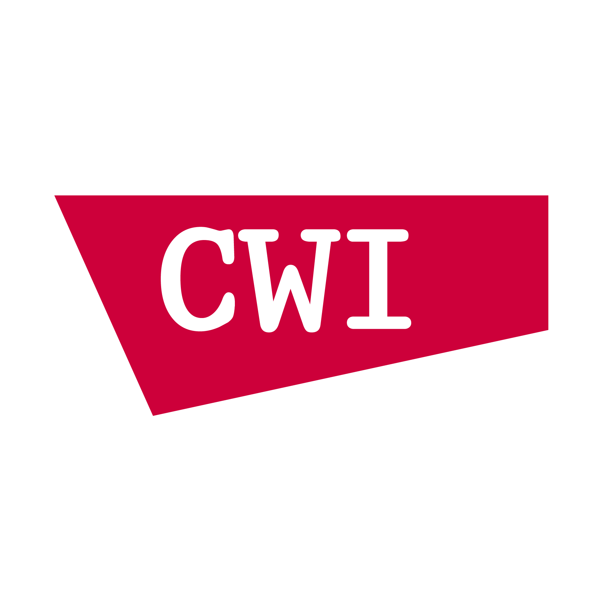
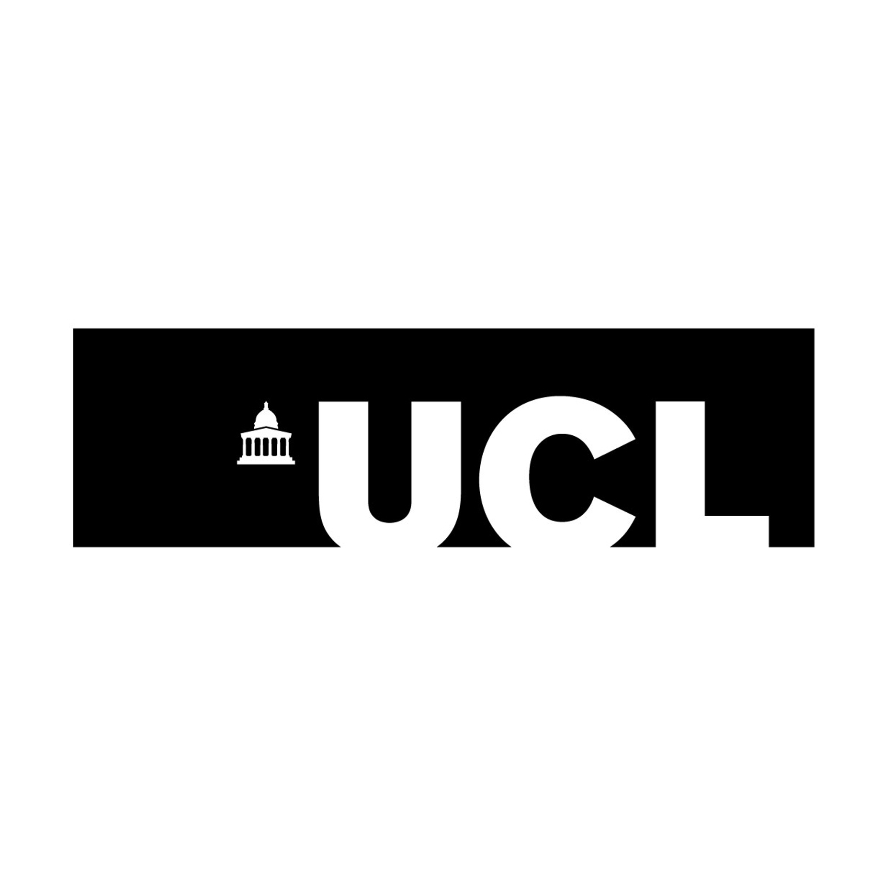
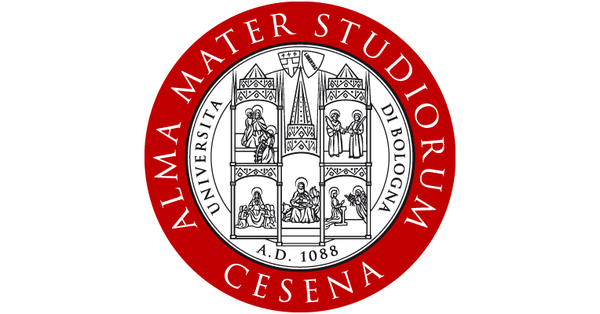

Biography
I am a senior scientist researcher (former ERCIM fellow) at the Distributed and Interactive Systems (DIS) group at Centrum Wiskunde & Informatica, CWI (The National Research Institute for Mathematics and Computer Science in the Netherlands). I am also the Director of Conference of ACM SIGMM and chair of the steering committee of ACM Multimedia. Truly passionate about multimedia and technology, my research interests are around immersive media systems, at the crossroads of multimedia processing, data analysis, machine learning, and communication systems.
I received my Laurea Triennale and Magistrale in Electronics and Telecommunications Engineering for Energy from the University of Bologna 🇮🇹 – Campus of Cesena in 2013 and 2016 (Advisor Prof. Marco Chiani). From September 2015 to March 2016, I was a visiting student at Kingston University, London 🇬🇧. In May 2017, I joined the LASP group at UCL 🇬🇧 under the supervision of Dr Laura Toni.
My PhD thesis "Understanding user interactivity for the next-generation immersive communication: design, optimisation, and behavioural analysis" received the Fabrizio Lombardi Prize 2022 and the SIGMM Award for Outstanding PhD Thesis 2023. In 2021, I joined the DIS group at CWI, Amsterdam 🇳🇱, initially through the ERCIM "Alain Bensoussan" Fellowship.
Research Experience

Postdoc · 2022–Present
Centrum Wiskunde & Informatica (CWI) · Amsterdam, The Netherlands
Postdoctoral Researcher (TRANSMIXR, INDUX-R, SPIRIT), Former ERCIM Fellow. Distributed and Interactive Systems (DIS) group.
Research Internship · 2020–2021
Centrum Wiskunde & Informatica (CWI) · Amsterdam, The Netherlands
7-month internship on user behavioural analysis in immersive systems (3-DoF to 6-DoF). Distributed and Interactive Systems (DIS) group.

Research Internship · 2016–2017
University College London (UCL) · London, United Kingdom
5-month internship on interactive communication. Department of Electronic & Electrical Engineering, LASP group.
Research Visiting · 2015–2016
Kingston University · London, United Kingdom
Visiting research for final master thesis. WMN (Wireless Multimedia Networking) research group.
Education
PhD · 2017–2022
University College London (UCL) · London, United Kingdom
PhD in Electronic and Electrical Engineering on immersive communication.
Thesis: Understanding user interactivity for the next-generation immersive communication
Advisor: Dr Laura Toni

MSc · 2013–2016
University of Bologna (UNIBO) – Campus of Cesena · Italy
MSc in Electronics and Telecommunication Engineering for Energy.
Thesis: Content Characterisation of 3D Videos
Advisors: Prof Marco Chiani (UNIBO); Prof Maria Martini (Kingston University, UK)
Service
Organising Committee
- Program Coordinator Chair & TPC Co-Chair at ACM MMSys 2025
- Program Chair at ACM IMX 2026
- Work-in-Progress Co-Chair at ACM IMX 2025
- Demo Co-Chair at QoMEX 2025
- General Chair of MMVE 2024 (co-located with ACM MMSys 2024)
- Special Session Co-Chair at QoMEX 2024
- Social Media Chair at ACM MMSys 2020 · 2021 · 2022
Technical Programme Committee
- Journals: ACM TOMM · IEEE Transactions on Multimedia · IEEE JSTSP
- Conferences: ACM MM (since 2022) · ACM MMSys (since 2023) · IEEE AIxVR 2024 · IEEE ICME (2020–2022) · QoMEX (2023–2024)
- Workshops: MMVE (since 2021) · IXR (2022)
Leadership & Community
- SIGMM Director of Conference (since November 2024)
- Steering Committee Chair of ACM Multimedia (since November 2024)
- Information Director for ACM SIGMM Records (since 2021)
- Co-organiser of the Spring School on Social XR (since 2023) at CWI, Amsterdam
Honors & Awards
- 2025 · Best Paper Award, QoMEX 2025 — "From Individual QoE to Shared Mental Models: A Novel Evaluation Paradigm for Collaborative XR"
- 2023 · SIGMM Award for Outstanding PhD Thesis in Multimedia Computing, Communications and Applications
- 2022 · Fabrizio Lombardi Prize for the best EEE PhD thesis, University College London (UCL)
- 2022 · ERCIM Alain Bensoussan Fellowship
- 2021 · Nicholas Georganas ACM TOMM Best Paper Award
- 2021 · Royal Society Mobility Grant between UCL, London and CWI, Amsterdam
- 2019 · SIGMM Travel Grant to ACM MMSys 2019
- 2018 · SIGMM Travel Grant to ACM MMSys 2018
- 2018 · Cisco Prize for Best Student Poster, Barlow Lecture at EEE Department, UCL
Gallery